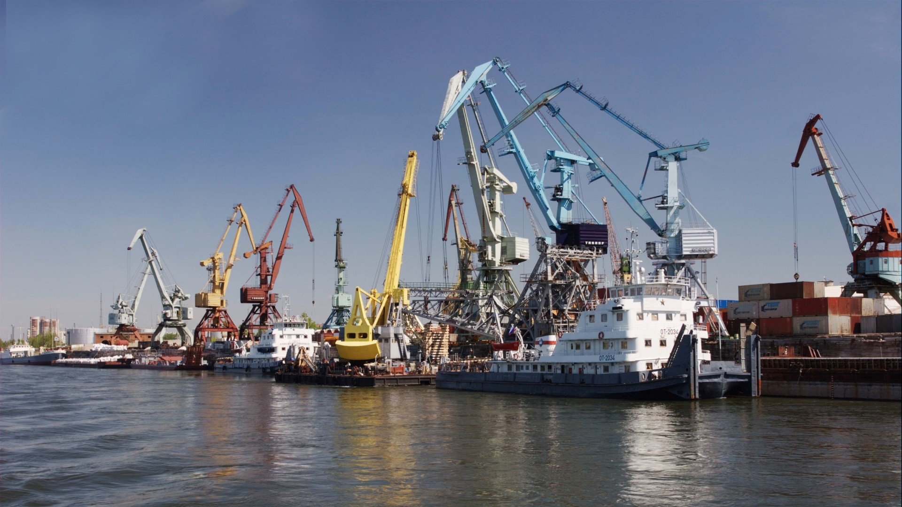
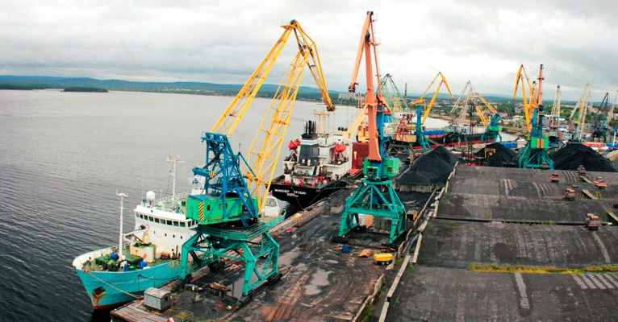
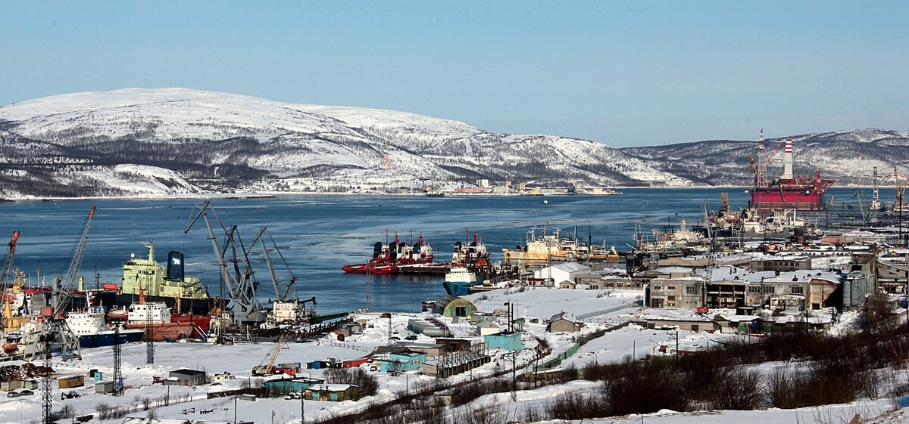

Главная старница
История порта
Таблица мониторинга
Морской порт Красноастанска
Добро пожаловать на сайт морского порта города Красноастанска.

Порт занимается грузовыми, пассажирскими перевозками.

Текущим директором порта является Паромов Георгий Иванович.
Морской порт Красноастанска был открыть в 1965 и обладает долгой историей, подробнее о которой можно узнать на странице истории порта.

Сведенья о пришедшик и ушедших судах за последнии дни можно посмотреть в Таблице мониторинга